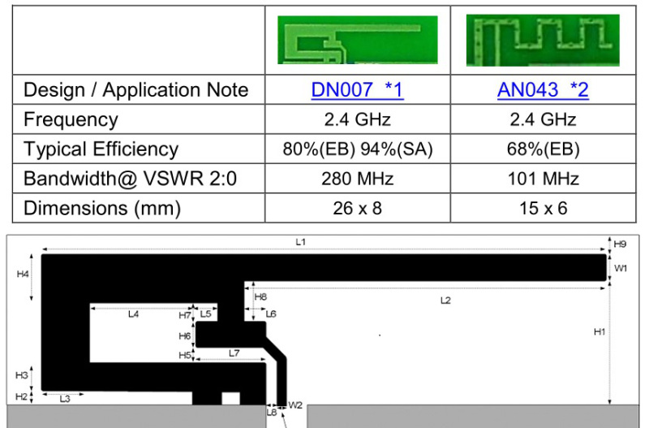
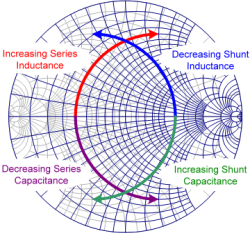
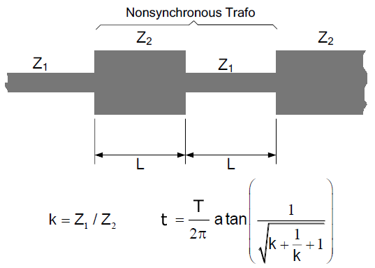

Antenna matching circuits
© Jean-Louis Noullet 2017
By inserting lossless components (capacitors, inductors, short transmission lines), it is possible to
improve the impedance matching between two devices, increasing the signal transmission efficiency.
An example of such an adjustment is matching an antenna, which has a complicated complex impedance, to a transceiver
which has a standard real impedance.

The process involves usually three steps :
- do the matching at the nominal (center) frequency
- check its behaviour across the required bandwidth
- check its sensitivity to parameter drift (temperature, manufacturing tolerance)
LC circuits
With the aid of the Smith chart, it is easy to demonstrate that any matching problem can be solved by means of a simple
Γ
circuit made out of one capacitor and one inductor, at the expense of a reduced bandwidth.

- The effect of capacitors and inductors placed in series can be described as motion on some
constant real impedance part circle of the Z-Smith chart.
- The effect of capacitors and inductors placed in parallel can be described as motion on some
constant real admittance part circle of the Y-Smith chart.
The most usual problem is to match an arbitrary impedance Z
x to the reference impedance Z
0,
which is represented by the origin (center) of the Smith Chart.
A practical method consists in finding two segments of circle (one from the Z-chart, one from the Y-chart),
building a path from Z
x to the origin.
A combined
Y-Z-Smith chart is helpful in this context.
The method is suitable for
simulations as well as for
laboratory circuit adjustements.
Transmission line
A
quarter-wave transmission line segment can match
Zx to
Z0,
provided that Z
x is
real (resistive).
(see
Standing Waves)
Such a segment can be cascaded with a LC circuit which in this case does not need to reach Z
0 but simply the real axis.
The quarter-wave segment characteristic impedance Z
s should be such as
(Zs)2 = Z0.Zx
Non-synchronous Transformer
In order to perform an adaptation between two real (resistive) impedances
Z1 and
Z2,
solutions using cascaded line segments of impedances
Z1 and
Z2 only are proposed
as
non-synchronous transformers. These solutions occupy less space than the quarter wave line.
The simplest one uses two cascaded line segments with equal length.

{kind=link}